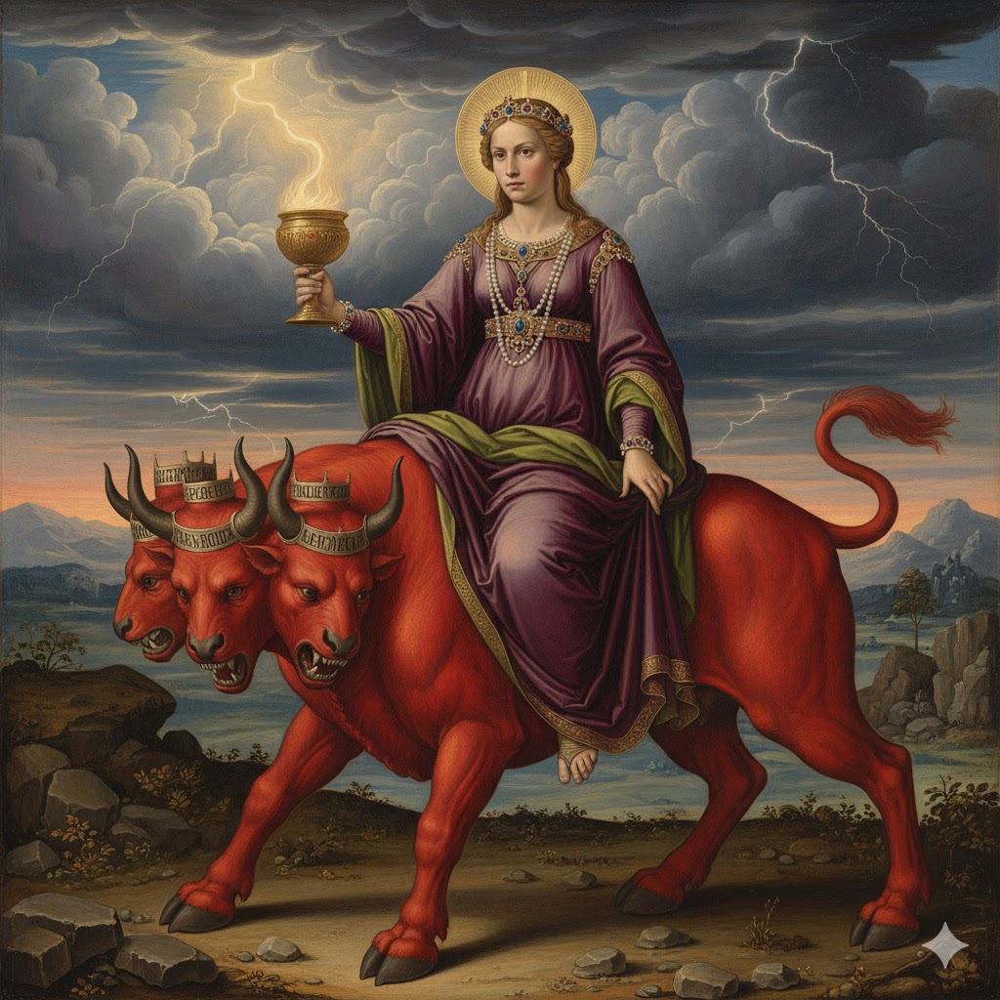
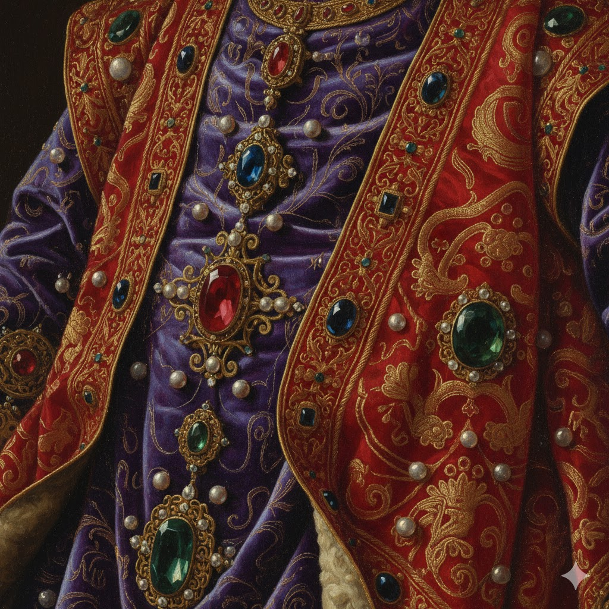
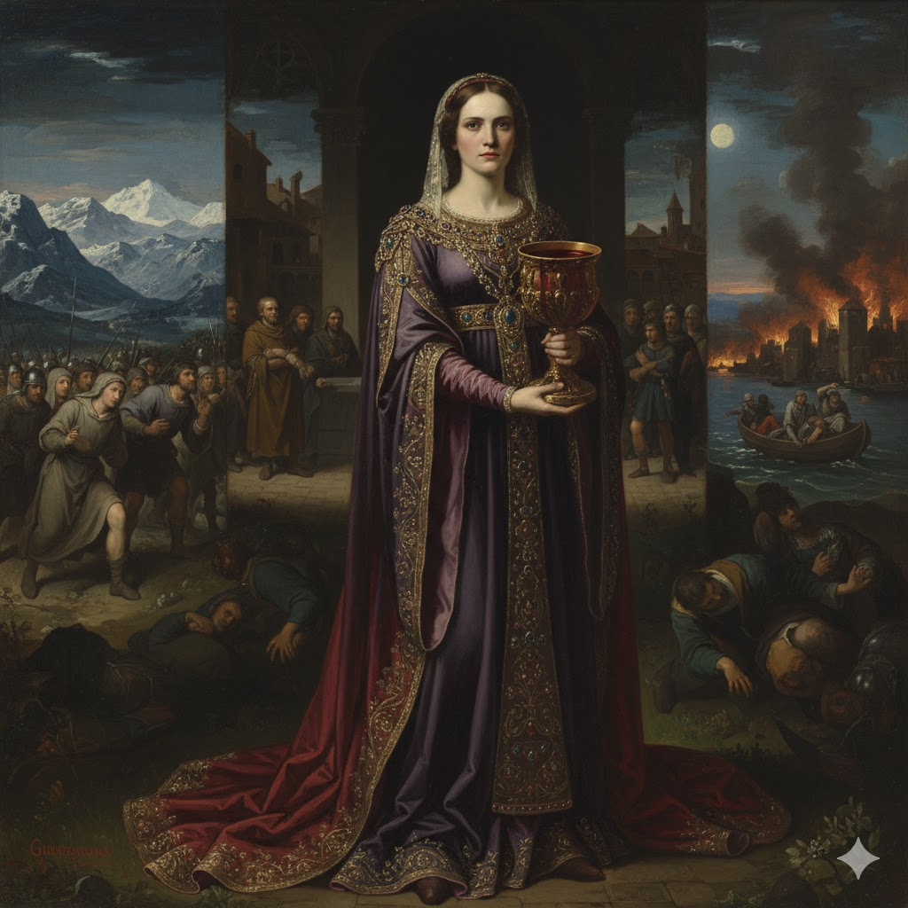
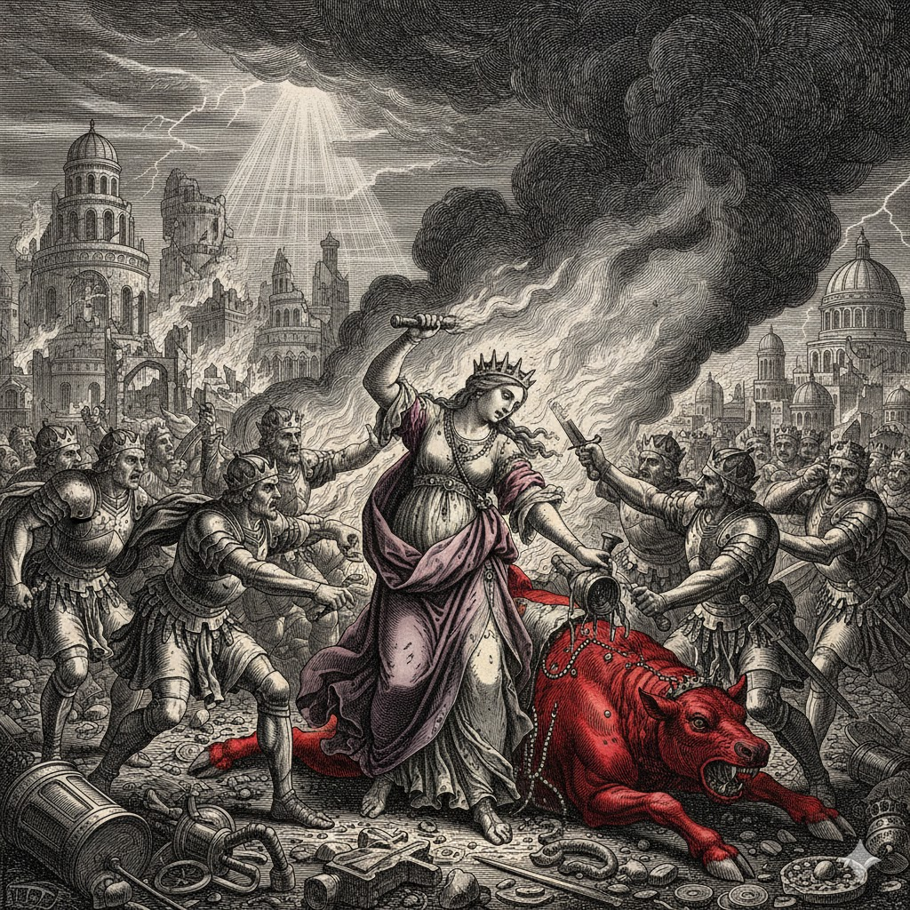

Introdução
Chegamos ao capítulo 17 do livro do Apocalipse. Este é, sem dúvida, um dos capítulos mais difíceis de interpretação e talvez não tenhamos respostas para tudo que ele revela. Ele trata do julgamento da grande meretriz. Há duas palavras no grego, língua original do Apocalipse, que se referem a juízo: CRISIS e KRIMA. Quando se usa CRISIS, temos um juízo em andamento, mas quando se usa KRIMA, é a pronúncia do resultado, que pode ser positivo (absolvição) ou negativo (condenação). Aqui João usa a palavra KRIMA, é a sentença que será pronunciada sobre Babilônia, uma vez que o juízo que antecede a Volta de Jesus já foi concluído quando Ele deixou o Santuário Celestial (Apocalipse 15:8) e as pragas já estão caindo sobre a Terra (Apocalipse 16).
João recebeu as revelações do Apocalipse em forma de audiovisual. Ele ouviu e viu muitas coisas. Em alguns momentos ele apenas ouvia para depois ver (Apocalipse 1:10 e 12; 7:4 e 9). Em Apocalipse 17 acontece a mesma coisa. Primeiro, o anjo disse que lhe mostraria o julgamento da "grande meretriz que se acha sentada sobre muitas águas" (Apocalipse 17:1). Mas quando o anjo o transporta em espírito, ele chega a um deserto e vê uma mulher montada em uma besta escarlate (17:3).

Divisões do Capítulo
Podemos dividir o capítulo 17 em três partes muito claras:
- Versos 1-2: A fala do anjo anunciando o juízo da grande meretriz.
- Versos 3-6: Descrição dos símbolos (a mulher e a besta).
- Versos 7-18: Explicação do anjo sobre a visão (primeiro a besta, depois a meretriz).
A Visão da Meretriz
👑 Vestes de púrpura

Ostentação e poder terreno
🥂 Cálice de ouro

Falsa doutrina em aparência pura
🩸 Embriagada com sangue

Perseguição aos fiéis
A Besta Escarlate
📊 Paralelo: Dragão (Apoc 12) x Besta Escarlate (Apoc 17)
| Característica | Dragão (Apoc 12) | Besta Escarlate (Apoc 17) |
|---|---|---|
| Cor | Vermelho (escarlate) | Escarlate |
| Cabeças | Sete cabeças | Sete cabeças |
| Chifres | Dez chifres | Dez chifres |
| Oposição | Guerra contra a mulher | Guerra contra o Cordeiro |
As Sete Cabeças - Sete Montes e Sete Reis
O anjo explicou para João: "Aqui está o sentido, que tem sabedoria: as sete cabeças são sete montes, nos quais a mulher está sentada. São também sete reis" (Apocalipse 17:9).
Os sete "montes" na mentalidade hebraica representam reinos. Isaías usa de forma intercambiável "montes" e povo/nação (Isaías 37:32; Salmo 48:2; Jeremias 51:25). O termo "rei" também é usado como equivalente de "reino" (Daniel 7:17; 8:21,23).
1º

Egito
2º

Assíria
3º

Babilônia
4º

Medo-Pérsia
5º

Grécia
6º

Roma Pagã
7º

Roma Papal
8º

EUA (procedente)
Interpretação dos Sete Reis:
Cinco já tinham caído (Egito, Assíria, Babilônia, Medo-Pérsia, Grécia).
Um existia (Roma Pagã - no tempo de João).
O outro ainda não havia chegado (Roma Papal - 538 d.C.).
A oitava cabeça procede das sete e vai para a perdição.
Os Dez Chifres
Os dez chifres representam poderes políticos durante o tempo da sétima cabeça, que apoiarão a besta (Apocalipse 17:13). Estas nações têm o propósito de se unir com a besta para forçar os habitantes da Terra a "beber" o vinho de Babilônia, isto é, unir o mundo sob seu controle e eliminar todos os que se recusam a cooperar.
O anjo explica que estes dez reis receberão autoridade juntamente com a besta e farão guerra contra o Cordeiro. Mas o Cordeiro os vencerá (Apocalipse 17:14).

A Queda de Babilônia
Apocalipse 17:16-17 revela que os próprios poderes que antes apoiavam a meretriz se voltarão contra ela: "E os dez chifres que viste na besta, esses odiarão a meretriz, e a farão desolada e nua, e comerão as suas carnes, e a queimarão no fogo."
Esta é uma verdadeira reviravolta! O sistema que uniu igreja e estado será destruído pelos próprios poderes políticos que o apoiavam. Deus usará os corações endurecidos dos ímpios para executar Seu juízo sobre Babilônia.

Vitória do Cordeiro
Embora o capítulo 17 de Apocalipse fale de poderes malignos ativos contra Deus e Seu povo, o controle da história deste mundo ainda está nas mãos de Deus. Ele traz juízo sobre os inimigos de Seu povo e livra Seus santos de todas as perseguições.
Podemos estar cientes que, a despeito das uniões dos poderes das trevas, no tempo do fim, contra Deus e Seu povo, nossa vitória está garantida. A promessa é que "Em todas as coisas, porém, somos mais que vencedores, por meio daquele que nos amou" (Romanos 8:37).

Conclusão
A grande meretriz, Babilônia, representa o sistema religioso apostatado que se uniu ao poder político para perseguir os fiéis de Deus. Suas filhas são as igrejas que herdaram suas doutrinas contrárias à Palavra de Deus. Mas o juízo de Deus virá sobre este sistema.
A mensagem do capítulo 17 é de esperança para o povo de Deus. Embora os poderes das trevas se unam contra o Cordeiro, a vitória já está assegurada. Aqueles que estão com Ele - os chamados, eleitos e fiéis - também vencerão.
A nossa posição deve ser ao lado do Cordeiro, confiando em Sua proteção e aguardando a Sua gloriosa volta. Como João, que ficou admirado diante das visões, nós também podemos nos espantar. Mas a promessa do anjo é também para nós: "Dir-te-ei o mistério" (Apocalipse 17:7). Com a ajuda do Espírito Santo, podemos compreender os planos de Deus para o tempo do fim.
📝 MINHA DECLARAÇÃO DE FÉ
Assinale com um X se concordar com as declarações abaixo: